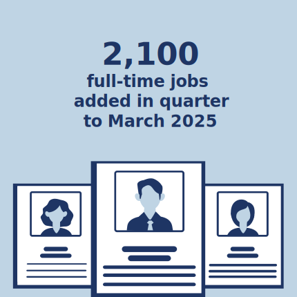
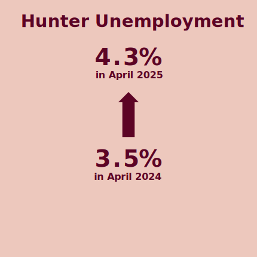
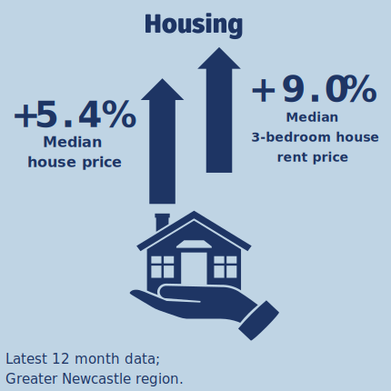

HUNTER INSIGHT DASHBOARD
Economic Update - July 2025
The University of Newcastle’s Institute for Regional Futures’ Insight Dashboard tracks socio-economic conditions in the Hunter. The dashboard is based on the Hunter Research Foundation Centre’s databank collected over 60 years, the most comprehensive collection for any region in Australia.
This dashboard of economic updates is designed to give decision-makers in government, industry and the community the latest data on the Hunter’s performance across key indicators. The dashboard draws upon national and regional data sources to deliver insights about the Hunter region. These updates will be provided throughout the year, in addition to the Hunter Insight Series. This release is the fifth in this format.
The dashboard is a snapshot of just some of the total data collected by the Institute for Regional Futures. For more information, please contact irf@newcastle.edu.au.
  
International and national conditions
- National: Economic growth, measured through Gross Domestic Product, showed an increase of +0.2% for the first quarter of 2025, capping off a 12 month increase of 1.3%.
- International: A fall in exports (-0.8%) were partly offset by a similar fall in imports (-0.4%).
- Household: Price rises measured through the Consumer Price Index (CPI) slowed further, down to a 12-month CPI of +2.4%.
Hunter conditions
- Hunter labour market (employment): Employment in the Hunter region has fluctuated over the previous 12 months. 2,100 full-time jobs were added in the first quarter (to February 2025). Employment in manufacturing has seen the most significant sectoral decline over the last 6 and 12 months.
- Hunter labour market (unemployment): The unemployment rate is at 4.3% in April 2025 (compared to 4.2% for NSW). The youth unemployment rate in the Hunter has dropped to 3.0%.
- Hunter housing market: Prices in the Hunter are on the increase, with price rises of 5.4% on a median basis for sales in the Greater Newcastle area in the last 12 months of data. Rental prices are up 9% for the region.
Contents
National economy
Trends: National economic growth remains modest, recording a 1.3% annual growth rate for the year to March 2025—still well below long-term averages. On a per capita basis, this equates to a decline of 0.4%, reflecting continued pressure from population growth outpacing GDP expansion.
Latest: In the March quarter of 2025, Australia’s GDP grew by 0.2%, but with household saving ratios increasing from 3.9% in the December quarter to 5.2% in the March quarter. In nominal terms (current price), the economy grew by 1.3% in the March quarter, reflecting continued elevated price increases.
Data source: Data source: ABS Australian National Accounts: National Income, Expenditure and Product.
At the national level, Australian Bureau of Statistics (ABS) data shows a quarterly rise in Gross Domestic Product (GDP) of 0.2% for the first quarter of 2025, slightly down on the previous quarter’s rise of 0.6% and giving a 12 month rise of 1.3% (chain volume measures). GDP per capita fell 0.4% driven by immigration over the previous 12 months. The ABS Australian National Accounts: National Income, Expenditure and Product, June release highlight the following points:
- Household Consumption: Household consumption continued to grow, mainly due to increased expenditure on energy. Household saving to income ratio rose to 5.2%, a significant increase over the last 12 months.
- Government Expenditure: Government consumption was overall flat, with increased expenditure on defence offset declines in state and local government expenditure, as well as declines in spending on social benefit programs (Medicare and NDIS).
- Public investment fell after rises in the latter half of 2024. This was offset by increases in private investment, mostly in housing and non-dwelling construction.
- Net Trade: Net trade detracted 0.1 percentage points from GDP growth, with a fall in exports (-0.8%) being partly offset by a similar fall in imports (-0.4%). A decrease in export of services of circa 3.0% contributed most to the decline.
- Mining profits were hit by price falls across coal and LNG due to global over supply. Non-mining industries, particularly manufacturing, services, and financial corporations led increases in profits across the nation.
See ABS for more info.
Data source: Data source: ABS Australian National Accounts: National Income, Expenditure and Product.
Business performance
The NAB Group Economics report that business conditions have continued to ease in 2025, falling to 0 index points in May, down from +6 in September 2024, reflecting ongoing softness in demand and profitability pressures. The latest NAB Monthly Business Survey highlights weak profitability and a further decline in employment conditions - now at a new cyclical low - raising concerns about softening labour demand. While business confidence improved again in May, it remains below long-run averages and is weakest in the retail and wholesale industries.
In New South Wales, business conditions declined to +2 index points (seasonally adjusted), a noticeable softening from earlier in the year. This suggests mounting pressure on sectors like retail and manufacturing, both of which experienced significant drops in conditions nationally. Confidence in NSW remained flat at 0 index points, with the trend below the long-term average.
Sector Insights: Retail conditions and confidence continued to decline across 2025, reversing a late-2024 recovery. Manufacturing saw a sharp decline (–25 index points nationally), whilst mining showed a strong bounce in May (+14), though this is volatile and comes after a large dip in April.
Data source: NAB Group Economics
Household spending
The ABS Monthly Household Spending Indicator for the April 2025 reference period indicates an increase in household spending of +3.7% compared to April 2024 in current prices. In NSW, total household spending increased by +2.6%, led by spending on services (+5.7%), whilst spending on goods was flat (+0%). Spending on food in NSW increased +7%, whilst expenditure on alcohol and tobacco decreased 12%. Discretionary expenditure (+2.1% overall) was driven by spending on recreation and culture (+7.7%) and hospitality (+8.5%)
The consumer price index rose 2.4% in the 12 months to April 2025 following previous trends in 2023 and 2024. The annualised CPI is down from a peak of over 8% in December 2022, now closer to long-term averages. Similar to the last dashboard update, housing (+2.2%), food and non-alcoholic beverages (+3.1%) were the main drivers. Prices for recreation and culture also rose +3.6%. Dairy was the only grocery product that saw price declines, with fruit and vegetables showing the highest increase. Automotive fuel prices fell 13% in the 12 months to April, whilst rents are still rising (0.3% for the month of April, 5.0% for the 12 months to April).
Data source: ABS Monthly consumer price index indicator
The ABS publishes specific price data on housing related expenses to give better insights (at the national level) into the price movements of purchases, rents and other expenses. Rents are still rising (up 5.0% in the previous 12 months). In comparison new dwelling prices have risen 1.2%. Electricity prices have fallen 6.5%, but have been highly affected by the availability of state and federal rebates.
Data source: ABS Monthly consumer price index indicator
An ongoing challenge for housing is the need for a reduction in costs related to construction in order to ensure an adequate supply of building for a growing population. Construction price indices show that prices have further stabilised since the start of 2023, with input prices for construction in Sydney declining by 0.1% in the March quarter, mainly due to reductions in timer prices. Prices of construction output still rose, however, mainly due to increased labour costs.
Data source: ABS Producer Price Indexes, Australia
Hunter
Employment
Over the past 12 months, full-time employment in the Hunter region (see below and footnotes for region definitions) has been cycling up and down in the order of 2-3%. This contrasts with more stable figures for New South Wales (NSW) overall, where full-time employment was roughly constant prior to a small peak at the start of 2025.
- In April 2025, full-time employment increased by 2,121 jobs, reversing the decline of 3730 jobs in March 2025.
- Over the past three months, full-time employment fell by a net 2,475 jobs.
- Over the past six months, the decline was only approximately 356 jobs.
Part-Time Employment:
- In the Hunter, part-time employment increased by 2.3% over the past 12 months.
- In comparison, part-time employment across NSW rose by 4.9%, following a 3.4% growth in the previous 12 months.
Note that for the Hunter, employment statistics are collected at the Statistical Area Level 4 (SA4), including the SA4s of ‘Hunter Valley excluding Newcastle’, and ‘Newcastle and Lake Macquarie’, but excluding the Mid-Coast LGA which is classified in the Mid North Coast SA4 region. Hence data for the Hunter Region in this section excludes the Mid-Coast LGA.
Data source: ABS Labour Force, Australia, Detailed
Unemployment
Data source: ABS Labour Force, Australia, Detailed
Unemployment in the Hunter region has mirrored the employment data, with cyclical fluctuations over the last 12 months. The unemployment rates is now at 4.3%, compared to 4.2% for New South Wales (NSW). Youth unemployment in the Hunter region in contrast is down to 3.0%, below the NSW level of 4.7%. These rates compare to a notional figure of circa 4.5% for the ‘non-accelerating inflation rate of unemployment’ or NAIRU. Unemployment rates far away from the NAIRU are expected to help fuel wages growth and inflation. Note that the values expressed here are with a 3-month moving average.
Data source: ABS Labour Force, Australia, Detailed
Employment - by industry
The latest industry level statistics for the Hunter are to February 2025. The 6 months prior showed large declines in manufacturing (-3900 full time equivalent employees, FTEs, for a 12 month decline of 6900 FTEs); Accommodation and food services (down 3100 FTEs) and Wholesale trade (down 2700 FTEs). Agriculture, Construction and most services industries (excluding health and education) saw increases in employment.
Data source: ABS Labour Force, Australia, Detailed
House prices
Data source: NSW Govt Rent and Sales Report
The latest data shows the median price of housing in the Hunter continuing recent increases, with a 2.5% increase in the October quarter, and an annual increase of 5.4% for the year in the Greater Newcastle Area (for the Cessnock, Lake Macquarie, Maitland, Newcastle and Port Stephens, based on the aggregate available in the NSW Govt Rent and Sales Report see regional explanations in the footnotes). All LGAs have been trending upwards in prices over the last 12-24 months, whilst still being below NSW averages on a value basis. The largest price increases in the 6 months to December 2024 are evident in Upper Hunter Shire and Singleton, although both are partly due to rebounds from earlier declines in 2023. Overall, there is a fairly clear picture of modest to large price increases evident across all LGAs.
Data source: NSW Govt Rent and Sales Report
Rental prices
For renters, the latest quarterly data (March 2025) showed a stagnation in rental increases, providing some relief from a 9% increase over the preceding 12 months. The data below is for the median weekly rent for 3-bedroom stand-alone houses. It is possible to see the median value by LGA, or the median values by LGA indexed to September 2010 (i.e. showing relative price increases for each LGA before and after September 2010). The latest data from the NSW Govt Rent and Sales Report extends to the first quarter of 2025.
Data source: NSW Govt Rent and Sales Report. Data indexed to start 2009.
In the 6 months to March 2025, all LGAs showed increases or stable rent prices. All LGAs saw a 6 month increase of over 4% except Mid-Coast and Maitland. The Upper Hunter Shire showed the largest increase with a 11.2% increase over the 6 months to March 2025. In comparison, Greater Sydney was flat.
Data source: NSW Govt Rent and Sales Report
House prices to annual rent ratio
The ratio of house prices to annual rent is generally continued to decline across the region (see figure below). However, the strengthening of house price increases has meant that this decline is not as uniform or as strong as late 2022 and early 2023. A decline implies that it is a more attractive time to invest in housing than previous years as rental prices have been increasing faster than house prices during the period. The figure below shows the ratio of house price for a median 3-bedroom house to the rental price. Internationally, a value of 20 is a common baseline, and Australia tracks well above this number (reflecting the relatively high price of housing purchases). The peak in house prices seen above in 2022 is also evident in the peak in the price to rent ratio (implying that the rents did not peak in the same way as house prices).
Data source: NSW Govt Rent and Sales Report
Building approvals
Despite the acknowledged need for a significant increase in housing stock, there is still a lag in building approvals coming through (see figure below) below. Data for 2025 is to date (and hence only reflects the first 5 months). Apartment approvals did increase in 2023 but have since declined and remain below pre-COVID levels. Housing approvals, the dominant type of building in the region, declined from a peak of 4000 homes in 2021, with data for 2024 showing a slight improvement on 2023. Only slightly more than 3000 homes were approved last year. In comparison, the Committee for the Hunter last year called on funding for 40,000 new homes for the region. This data is available by Statistical Local Area 2 (SA2) level, and thus the data presented here includes SA2 areas in the Mid-Coast LGA (see comment in footnotes).
Data source: ABS Building Approvals
The geographic spread of building approvals is reflected in the below charts. The figure shows the number of building approvals by type since 2016 for the whole of the Hunter on a cumulative basis. For housing, the dominance of approvals in the outer-middle regions of the Hunter is evident, with housing approvals concentrated in the Branxton, Thornton and Morriset areas. The urban areas in Newcastle and Lake Maquarie see the concentration of apartment approvals, with few new housing approvals. The mid-density housing (semi-detached, row and terrace houses) are spread over a combination of urban areas and the outer SA2s. In 2023, there was a rise in approvals in Newcastle SA2, bucking the trend of declining approvals across the region. Most of this was due to apartments.
The Institute for Regional Futures delved into the issues surrounding housing in the region at Hunter Insight Series: Building a Healthy Housing Market, held in October 2023.
Greenhouse gas emissions
As Australia transitions to a net-zero economy, there will be significant changes for the Hunter region. The dashboard is now including latest data on emissions, and soon energy statistics to reflect this transition. However, there is currently a lag of 4 years on local-scale GHG emissions, with last available data published by the NSW Government being for 2021.
In 2021, 48 Mt or 37% of NSW emissions were in the Hunter. This is despite having only 8% of the NSW population. Sixty-eight percent of emissions are due to electricity generation, however. Sixty-three percent of these emissions are due to consumption of electricity (so called scope 2 emissions) outside the region. Adjusting for these emissions, results in 27 Mt of emissions in the Hunter, still 21% of the state’s emissions.
On a per-capita basis, emissions in the hunter are 61 t/capita, and adjusting for the exported electricity to other users outside the region, 34 t/capital. This is against a backdrop of an average Australian of 19 t/capita (National Greenhouse Gas Inventory).
Progress in emissions reductions in the region is being observed, particularly as some of the aging coal-fired power stations in the region are either being retired or reducing their capacity utilization. In 2021, Hunter emissions decreased by approximately 7%, primarily due to changes in electricity generation, with a notable decline in fugitive emissions from fuels as well.
Data source: NSW Net Zero Emissions Dashboard
A more detailed view of emissions by sector is provided below. In this view, for electricity, so-called “scope 2” accounting is used, where emissions due to electricity generation are assigned to the electricity customer (and thus emissions due to electricity exported from the region are not included).
Data source: NSW Net Zero Emissions Dashboard
Scope 3 GHG Emissions: Scope 3 greenhouse gas emissions are those emissions related to economic activity besides direct fuel and electricity consumption. This accounting of emissions provides a background to additional opportunities to decarbonize for industry, yet are often difficult to realise because of measurement issues and the need to involve multiple stakeholders. At the Institute for Regional Futures, the Scope 3 emissions of industrial production in the Hunter have been estimated based on a unique combination of data from the EXIOBASE global MRIO model, national IO tables and local IO data from REMPLAN.
The chart below shows greenhouse gas emissions by aggregated source and destination sectors in the Hunter region. Emission Sources are broken down by source sector in the colour: agriculture forestry and fishing, mining, manufacturing, electricity and other utilities, construction, services, and transport. Further detail is available upon request, with emissions broken down into supply-chains. The scope 3 emissions shown below exclude scope 1 and scope 2 emissions.
Manufacturing is the largest contributor to Scope 3 Emissions in the region. The manufacturing sector’s Scope 3 emissions are close to 15 Mt of CO2-equivalent (CO2-e). Aggregate emissions are visible in the chart below, but due to the broad nature of the sector, the aggregate emissions are spread over many sources. Some key contributors to the results are the scope 3 emissions from mining sources and from indirect electricity use due to non-ferrous metal manufacturing; agricultural emissions due to meat product manufacturing; emissions of cement and lime preparation for concrete manufacturing. The IRF is providing insight into organisational scope 3 emissions in the region. Get in touch below for more information.
For more detail on the Hunter Insight Dashboard please contact the Institute for Regional Futures
* The data presented here for the Hunter region includes the local government areas (LGAs) of Cessnock, Dungog, Lake Macquarie, Maitland, Mid-Coast, Muswellbrook, Newcastle, Port Stephens, Singleton and Upper Hunter. However, the ABS collects and reports data by Statistical Area which does not fully align with this definition. The Statistical Area Level 4 (SA4) classification, commonly used for reporting economic statistics includes the above LGAs in two SA4 areas comprising the Hunter Valley region but classifies the Mid-Coast LGA in the Mid North Coast SA4. At the Statistical Area Level 2 (SA2), the SA2 areas that are part of the Mid-Coast LGA (including Taree, Gloucester, Old Bar, Buladelah, Forster, Tuncurry) are included in the data presented for the Hunter. The building approval data is available at SA2 level. For housing rental and sales data, the NSW Govt Rent and Sales Report provides aggregate median values only for the Greater Newcastle area based on old statistical subdivisions, but which corresponds to the LGAs of Cessnock, Lake Macquarie, Maitland, Newcastle and Port Stephens.
Suggested citation: Institute for Regional Futures. “Hunter Insight Dashboard, Economic Update – July 2025.” University of Newcastle. July 2025. URL.
© The University of Newcastle 2025. Apart from any use as permitted under the Copyright Act no part may be reproduced by any process without the permission of the publishers.
Disclaimer: The information contained herein is believed to be reliable and accurate. However, no guarantee is given as to its accuracy or reliability, and no responsibility or liability for any information, opinions, or commentary contained herein, or for any consequences of its use, will be accepted by the University, or by any person involved in the preparation of this report.